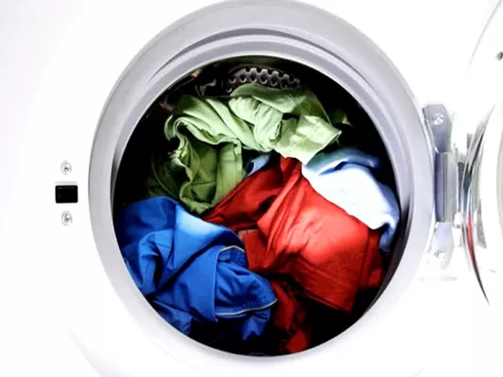

Tin Tức
Quần Jean bị giãn gối, phải làm sao?
Quần jean là item năng động, thời thượng, cá tính có trong tủ đồ của mọi chàng trai. Tuy nhiên, sử dụng trong thời gian dài có thể quần jean bị giãn gối, vậy phải làm sao?
Đọc thêmCotton tái sinh là gì? Chất liệu Cotton tái sinh mang lại gì cho môi trường?
Cotton tái sinh là một giải pháp an toàn và vô cùng thân thiện với môi trường. Hiện nay, loại chất liệu này được đánh giá khá cao và là hướng đi mới cho ngành công nghiệp may mặc.
Đọc thêm

Giải đáp: Nên hay không để quần áo trong máy giặt qua đêm?
Hiện nay có rất nhiều người thường có thói quen để quần áo trong máy giặt qua đêm. Tuy nhiên việc này lại mang đến nhiều những tác hại, khiến trang phục có mùi hôi, ẩm mốc khó chịu. Đồng thời còn gây nguy hại tới sức khỏe bản thân và gia đình.
Đọc thêm